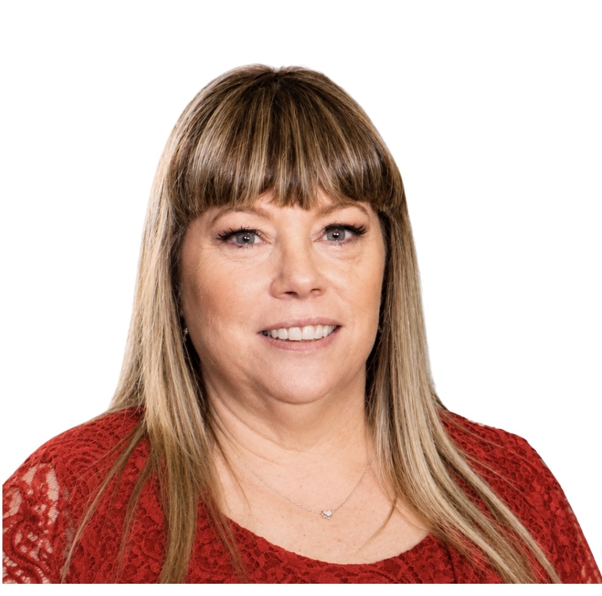

Our Story
Founded in 1999, South Shore Children's Center has proudly served the West Islip and surrounding communities for more than 25 years. As a long-standing early childhood education center, we are dedicated to providing a warm, safe, and enriching environment where children feel supported, confident, and excited to learn.
Our experienced team is committed to nurturing the whole child — academically, socially, emotionally, and developmentally — through meaningful classroom experiences, strong family partnerships, and a school culture built on trust, care, and professionalism.
For generations, families have relied on South Shore Children's Center to provide a strong foundation during the most important years of a child's development.
What Drives Us
"To provide every child with a nurturing, safe, and stimulating environment that celebrates their individuality and builds the academic, social, and emotional foundation they need to thrive — in school and in life."
The People Behind the Center
Executive Director, Founder & Owner
Helene founded South Shore Children's Center in 1999 and has led it ever since, building it from its early days into one of the largest licensed childcare facilities in West Islip. She holds a master's degree in Education from LIU and has spent over three decades in early childhood education, shaping her approach through years of hands-on experience in classrooms and centers. Her philosophy at SSCC comes down to one idea: respectful caregiving — treating every child, no matter how young, as someone whose needs, feelings, and individuality deserve to be honored. That belief has guided the center's culture from the beginning and continues to shape how SSCC's teachers and staff care for children today.
Director of Operations
Zach is an operator here at SSCC, focusing on operational processes, family experience, and general management. He brings a background in product and data to improving the systems and processes that families and staff rely on every day. Prior to joining SSCC, Zach held product and data leadership roles at Capital One. He holds a degree in Information Systems from Marist College and a Master's in Data Science from Northwestern University. Zach has been part of SSCC his whole life. His earliest memories at the center include helping Helene serve snacks in its very first days.
Director of Operations
Natalie is an operator at SSCC, focusing on operational processes and general management. Prior to joining SSCC, Natalie built her career in finance and consulting at Bank of America and Boston Consulting Group. She holds a degree in Finance from Villanova University and a Master's of Business Administration from Duke University. Shortly after joining SSCC, Natalie welcomed her first child, who she loves bringing to the center each day. As an SSCC parent herself, she has a deep appreciation for the trust families place in SSCC and the challenges parents navigate each day.

Assistant Director
Vicki has been part of the South Shore Children's Center family for 20 years, starting as a teaching assistant before moving into a Toddler Time classroom and eventually the Admin Team. A graduate of Briarcliffe Secretarial School, she keeps things running smoothly behind the scenes and is someone staff and families alike can always count on. What she loves most is being part of a community that feels like family, watching children learn, grow, and return year after year.
UPK Program Director
Tori has been part of the SSCC family for six years, previously serving as a Lead UPK Teacher where she co-led an integrated classroom. She holds a degree in Early Childhood Education from St. Joseph's University and is New York State certified in Early Childhood Education, Birth–Grade 2. She's passionate about partnering with families to support each child's growth.
We invite you to schedule a tour and experience our community firsthand.
Schedule a Tour